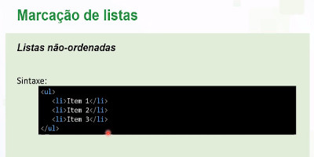
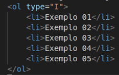
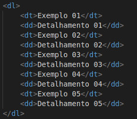

Existem três tipos de listas no HTML: não ordenadas, ordenadas e de definição (ou descrição). Elas servem para criar tópicos, numerá-los ou organizar informações de forma estruturada.

A lista não ordenada não possibilita trocar de marcador. Exemplo:

A lista ordenada (<ol>) possibilita trocar o tipo de marcador utilizando o atributo type, permitindo o uso de números, letras ou algarismos romanos. Exemplo:

Com as listas de definição (ou de descrição), você pode apresentar um termo e, logo em seguida, detalhá-lo. Exemplo: